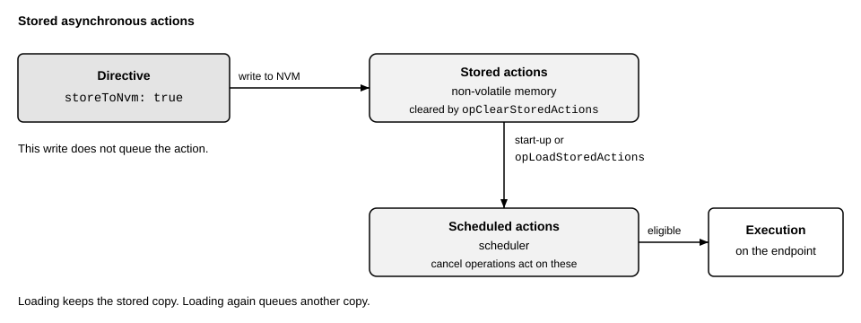

Higher-level behavior
This page describes behavior that spans more than one message: persistent storage and fail-safe operation.
Persistent storage
An RCP server can have a non-volatile memory (NVM), e.g., an EEPROM. The query rcp.dev.qryNvmStatus tells whether it is present. An operation that needs the NVM fails with the result actNvmNotPresent on a server without it. The NVM holds the configuration, actions, and user data.
Configuration
The command rcp.dev.opSaveConfig saves the current configuration of the server. The configuration includes the network settings, such as the MAC address and the multicast addresses, and the registered clients.
At start-up, the server loads the saved configuration if there is a valid one. Otherwise, or without an NVM, it starts with its default configuration, so a change that is not saved is lost at a reset. A saved configuration that cannot be loaded, e.g., because its checksum does not match, is not applied. The status of the NVM reports the error (rcp.core.fldNvmStatus.configError).
The command rcp.dev.opRestoreConfig loads the saved configuration at any time. If it returns an error, the current configuration does not change. The command rcp.dev.opRestoreFactoryConfig erases the NVM and restarts the server with its default configuration.
The power-on flag of the status (rcp.core.fldServerStatus.pwrOn) is set at every start until the client clears it with rcp.dev.opClearPwron. A client that clears the flag once and polls it later can detect an unwanted reset.
Actions
An action whose field fldAction.storeToNvm is set is written to the NVM instead of being scheduled. The server loads the stored actions at start-up, so they run even if no client has reached the server yet. This allows fail-safe actions that exist from power-up.

Fig. 1 Storage and scheduling of asynchronous actions
The command rcp.dev.opLoadStoredActions loads the stored actions at once. It does not remove the actions that are already loaded, so repeating it loads them again. The command rcp.dev.opClearStoredActions erases the stored actions, but not the loaded ones. The status of the NVM tells how many actions are stored and whether loading them failed (rcp.core.fldNvmStatus).
To receive reports from stored actions after a restart, register their client and save the client configuration, see Network Configuration.
User data
The NVM can also hold user data, which the server does not interpret. The command rcp.dev.opManageUserData reads or writes it (rcp.core.fldNvmOperation). The server rejects an access beyond the user-dedicated NVM.
Fail-safe operation
The network watchdog detects the loss of the client, see Core Operations. If it expires, the server enters the fail-safe mode and executes the fail-safe actions. These are the actions with the field fldAction.failsafe set. An example is an action that brings an output into a safe state. The client defines the fail-safe actions after the start of the server, or the server loads them from the NVM, see above. The server may also enter the mode for other implementation-specific reasons.
In fail-safe mode, the server rejects a synchronous action without the flag, and outside of the mode, it rejects a synchronous action with the flag. The result is actFailsafeError in both cases. An asynchronous fail-safe action waits in the scheduler until the server enters the mode.
What else the mode changes is implementation-specific, e.g., whether the server cancels the other scheduled actions and whether the PTP timer keeps running. The same holds for the way in which the server leaves the mode. The flag rcp.core.fldServerStatus.liv is set during normal operation and cleared in fail-safe mode. The command rcp.dev.opEnterFailsafe forces the mode. It can be used to test the fail-safe actions.
Example
The following directive enables and saves a one-second watchdog timeout, stores a fail-safe action, and loads it for use now. It also survives a restart. In fail-safe mode, the action toggles GPIO pin 0, already configured as an output, every 250 ms, e.g., to blink a lamp. Execution reports are suppressed.
seq: 12
dir { config { rcp { server { watchdogTimeoutMs: 1000 } } } }
dir { action { rcp { op: opSaveConfig } } }
dir {
action {
hndl: 1
gpio { tgl: 0x01 }
timed { period { nsec: 250000000 } }
repeatCount: 4294967295
replyMode: actReplyNever
failsafe: true
storeToNvm: true
}
}
dir { action { rcp { op: opLoadStoredActions } } }